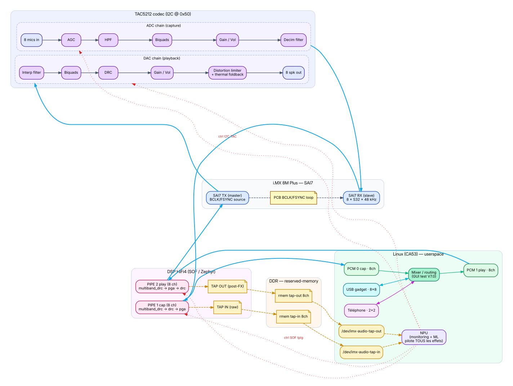
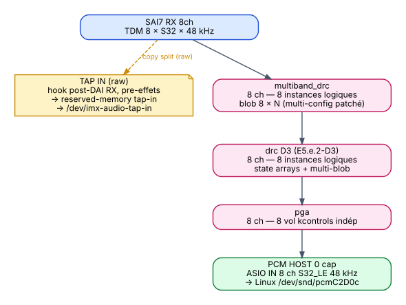
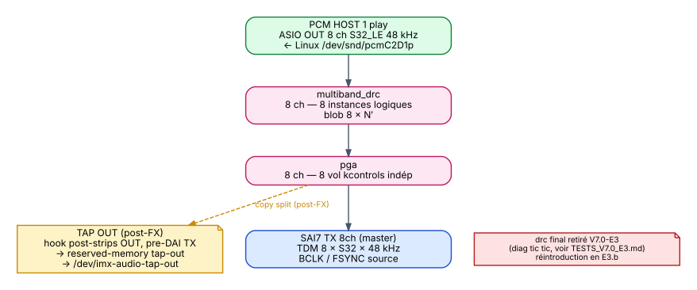
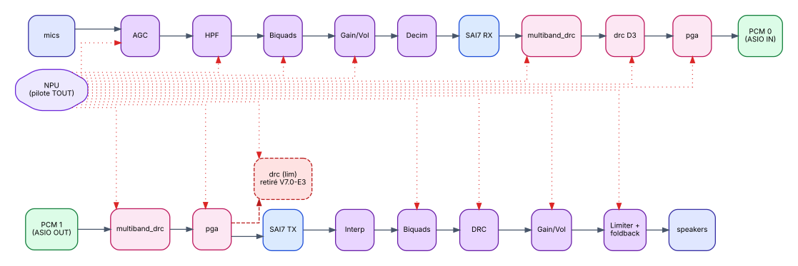
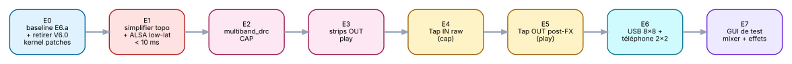

pipeline_trigger_run, register_dma_irq,
is_pending supposent tous un anchor unique. Sans HOST, chaque
fix appliqué cassait un autre maillon. Le pipe_task body ne
s'exécute jamais (mailbox 0x570 = 0xFFFFFFFF).
/dev/imx-audio-tap-in et /dev/imx-audio-tap-out.
| Priorité | Cible | Statut |
|---|---|---|
| Latence end-to-end | < 10 ms (mic → DSP cap → mixer Linux → DSP play → speaker) | Non-négo |
| GUI de test V7.0 | App Linux : mixer + réglage de TOUS les effets DSP / TAC en direct (kcontrols) | Livrable V7.0 |
| 2 NPU taps | Plomberie firmware + DT + kernel + /dev (tap IN raw + tap OUT post-FX) | Livrable V7.0 |
| NPU contrôle TOUS les effets | Effets TAC5212 ADC + DAC (via I²C / kcontrols) + effets DSP SOF cap + play (via tplg kcontrols) — chaîne unifiée pilotée depuis le NPU et le GUI | Cible architecturale |
| Code NPU (modèles ML) | Inférences sur tap-in / tap-out + écriture des consignes effets | Aval (post-V7.0) |
| Ardour | — | PAS un objectif |

| # | Invariant | Justification |
|---|---|---|
I1 | TX = master, RX = slave, SAI ASYNC, BCLK continu (FCONT=1) | mémoire feedback_tx_master_drives_all.md + idempotence patch |
I2 | DMA 2 ms, SCHEDULE_TIME_DOMAIN_DMA exclusivement | mémoire feedback_dma_2ms_definitive.md non-négo |
I3 | 8 ch = 1 component multi-channel, jamais 8 instances séparées | mémoires feedback_pcm_8ch_pas_separes.md · sof_pivot_1comp_8ch.md |
I4 | Pas de cross-pipeline DSP cap ↔ play | nouveau V7.0, design choice |
I5 | NPU taps présents en permanence (raw + fx) | mémoire project_npu_non_negotiable.md |
I6 | tac-reset avant tout test capture | mémoire tac_reset_required_after_boot.md |
I7 | Topology : period=2000 µs, S32_LE, 8 slots TDM, 48 kHz | baseline E6.a |
I8 | Filename firmware = sof-imx8m.ri | mémoire sof_firmware_deploy_path.md |

| Étage | Component SOF | Paramètres | Origine |
|---|---|---|---|
| Capture DAI | DAI SAI7 RX | TDM 8 slots × S32_LE × 48 kHz | E6.a inchangé |
| TAP IN (brut) | hook dai_dma_cb cap | reserved-memory tap-in · 8 ch · signal mic non traité | V7.0 nouveau |
| Compression multibande | multiband_drc 8 ch | blob 8 × N (multi-config patché — modèle drc D3) | V7.0 nouveau |
| Compression dynamique | drc D3 patché | state arrays + multi-blob 8 × M | E5.e.2-D3 réutilisé |
| Volume | pga 8 ch | 8 vol kcontrols indép | E5.e.2 step1 réutilisé |
| HOST PCM | PCM 0 cap | 8 ch S32_LE 48 kHz · /dev/snd/pcmC2D0c | E6.a inchangé |
drc limiteur final a été retiré
après diagnostic T3.9 (artefact « tic à l'attack » sur voix temps réel, causé par les
coeffs default issus de la chaîne musique + double compression avec multiband_drc).
Réintroduction en E3.b avec coeffs calibrés voix.

| Étage | Component SOF | Paramètres | Origine |
|---|---|---|---|
| HOST PCM | PCM 1 play | 8 ch S32_LE 48 kHz · /dev/snd/pcmC2D1p | V7.0 simplifié vs E6.a |
| Compression multibande | multiband_drc 8 ch | blob 8 × N′ (instance distincte de PIPE 1) | V7.0 nouveau |
| Volume | pga 8 ch | 8 vol kcontrols indép | réutilisé |
| Limiteur dynamique | drc 8 ch | blob 8 × M′ (limiteur de sortie) | réutilisé |
| TAP OUT (post-FX) | hook post-strips, pre-DAI TX | reserved-memory tap-out · 8 ch · signal speaker post-traité | V7.0 nouveau |
| Playback DAI | DAI SAI7 TX | TDM 8 slots × S32_LE × 48 kHz · master | E6.a inchangé |
mixer16, deinterleave_8, interleave_8 et tous les
buffers mono intermédiaires (B[0..7], B[100..107]) de E6.a sont retirés. Le bug
copy_seq re-entry guard (commit 0580b5f14) reste en place,
mais ne sera plus déclenché par cette topology.

tac5212.c doit exposer ces effets en kcontrols
(à vérifier en E0, étendre si besoin).
| Sens | Chaîne complète |
|---|---|
| Capture | mics → TAC ADC AGC → HPF → biquads → gain → decim → SAI7 RX → DSP cap multiband_drc → drc D3 → pga → PCM 0 |
| Playback | PCM 1 → DSP play multiband_drc → pga → SAI7 TX → TAC DAC interp → biquads → DRC → gain → limiter+foldback → speakers |
| Device | Channels | Direction | Source / sink | Usage |
|---|---|---|---|---|
| DSP TAC5212 | 8 × 8 | cap + play | PCM 0 cap (mics post-effets DSP)PCM 1 play (vers strips OUT DSP) |
Capture mics + restitution speakers locaux |
| USB gadget audio | 8 × 8 | cap + play | USB 2.0 audio class · vu comme carte son externe par un PC host | I/O studio externe (DAW PC ↔ board) |
| Téléphone | 2 × 2 | cap + play | Modem voice / interface VoIP / PCM dédié | Communication voix entrante/sortante |
TESTS/TESTS_V7.0_E<n>.md). Chaque étape passe par
critic_analyze + critic_submit avant tout code SOF.
Le low-latency est traité tôt (E1) et vérifié à chaque étape, pas
en sprint final.

| Étape | Objectif | Critère GO |
|---|---|---|
| E0 | Branche créée depuis 0580b5f14, doc V7.0 commit/push, audit patches kernel V6.0→V7.0 appliqué (retirer apply-v6-always-on.py), audit driver tac5212.c (vérifier qu'il expose tous les effets ADC + DAC en kcontrols ALSA), fiche E0 baseline E6.a re-vérifiée | boot OK, audio loopback Linux OK, kernel sans patches V6.0, kcontrols TAC visibles via amixer |
| E1 | Topology simplifiée + ALSA low-lat Linux : retirer mixer16/deinterleave/interleave, PCM 1 → SAI7 TX direct, MMAP + SCHED_FIFO + mlockall sur le loopback de test | latence boucle ALSA → DSP play → SAI loopback PCB → DSP cap → ALSA mesurée < 10 ms, 0 xrun sur 60 s |
| E2 | Pipe cap : remplacer eq_iir par multiband_drc (8 ch multi-blob, patch state arrays) | 8 multibandes indép vérifiables, latence E1 préservée |
| E3 | Pipe play : strips OUT multiband_drc → pga (8 ch indép) — drc final retiré après diag tic tic | 8 voies play indép paramétrables, audio OK, latence préservée |
| E4 ✓ | Tap IN brut (PIPE 1) : apply-npu-tap-dt.py refactoré 2 carves + 2 nodes, module multi-instance via prop DT device-name, hook firmware dai_dma_cb capture, /dev/imx-audio-tap-in + /dev/imx-audio-tap-out exposés | GO 2026-05-11 — tap-in 1.22 MB/s, tap-out V3.2.2 non régressé, loopback E3 préservé |
| E5 ✓ | Tap OUT post-FX (PIPE 2) : plomberie livrée en E4 (refactor dual-tap), validation empirique E5 | GO 2026-05-11 — modulation PGA Strip1 -40 dB visible exactement sur tap-out, tap-in/-out simultanés OK |
| E6.a ✓ | USB gadget UAC2 8×8 isolé (configfs + systemd, libcomposite + usb_f_uac2 builtin) | GO 2026-05-11 — bidir validé : PC→board sine 880 -4.4 dBFS, board→PC sine 440 -6 dBFS sur 8 voies, format S32_LE 48 kHz négocié high-speed, 0 régression DSP |
| E6.b ✓ | Téléphone 2×2 (snd-aloop simulé, faute de modem hardware) | GO 2026-05-11 — card 10 Phone, sine 1 kHz aloop bidir préservé -6 dBFS |
| E6.c ✓ | Routing ALSA paire-à-paire (alsa-route-bridge déclaratif via alsaloop) | GO 2026-05-11 — route E2E DSP cap → UAC2 → PC arecord validée (4.6 MB/3 s, débit nominal). PipeWire dispo en réserve |
| E6.d ✓ MVP | Mixer console DAW SW (mixer-pro daemon C) — 26 in × 18 out, 4 bus FX stéréo + sends, socket JSON /run/mixer-pro.sock | GO MVP 2026-05-11 — matrice précise (voies non routées = -inf dB), 48 kHz steady, latence ALSA interne 8 ms (mesurée snd_pcm_delay) |
| E6.e ✓ MVP | 4 effets natifs C sur les bus FX : compressor, reverb Schroeder, delay, EQ 3-band biquad. set_fx_param via socket JSON | GO MVP 2026-05-11 — vtable fx_engine_t (prêt LV2 futur), 8 params modifiés en live OK, routage produit signal (-92 dB vs -inf sans). Validation perceptuelle non mesurée |
| E6.f ✓ Diagnostic | Profiling concret via clock_gettime exposé dans get_state JSON (prof_cap_us, prof_mix_us, prof_play_us, prof_iter_us) | Diagnostic 2026-05-11 — Effets PAS le hotspot : mix 4 effets actifs = 473 µs (24 % budget) ; le coupable = snd_pcm_readi/writei DSP (512 ms par cycle = recover SOF IPC). → E6.g = retrait snd_pcm_link + 3-thread + lockfree ring buffers (kernel a déjà CONFIG_PREEMPT=y, PREEMPT_RT non critique) |
| E6.g ✓ | Refactor mixer-pro : retrait snd_pcm_link + 2 threads (audio cap+mix / play DSP) + ring SPSC 32 périodes | GO 2026-05-11 — 48 288 Hz steady (100.6 % nominal, vs 36 % avant) avec 4 bus FX actifs, 0 xrun steady, latence ALSA 8 ms. Latence ring +58 ms (trade-off design, optim possible E6.h). Total E2E mixer ~66 ms |
| E7 | GUI de test V7.0 : app Linux (Qt / Flutter / web) — mixer N×M visuel + sliders pour tous les effets de la chaîne unifiée : TAC ADC (AGC, HPF, biquads, gain, decim) + DSP cap (multiband_drc, drc, pga) + DSP play (multiband_drc, pga, drc) + TAC DAC (interp, biquads, DRC, gain, limiter, foldback, VAD, tone gen) | tous effets TAC + DSP pilotables en direct depuis le GUI, audio reste < 10 ms |
meta-local/recipes-kernel/linux/) ont
été montés pour V3.2.2 / V5.4.1 / V6.0. Audit individuel pour V7.0 :
certains restent obligatoires, l'un doit être retiré, un autre adapté.
| Patch / fichier | V7.0 | Action |
|---|---|---|
0001-imx8mp-evk-audio-mipi.patch (board audio + MIPI) | Garder | Patches du board hardware, indépendants V6.0 |
spdif.cfg · disable-at24.cfg | Garder | Hors scope audio principal, peu coûteux |
SOF imx-probes (imx-probes.c, apply-imx-probes.py, sof-imx-probes.cfg) | Garder | Debug auxiliaire, V7.0 utilise debugfs principalement mais SOF Probes peut servir |
TAC5212 driver (tac5212.c/h, apply-tac5212-dt.py, tac5212.cfg) | Obligatoire | Sans ça, pas d'audio du tout |
apply-npu-tap-dt.py — V7.0-E4 : 2 reserved-memory tap_in_buffer@94270000 + tap_out_buffer@942B0000 (256 KB no-map chaque) + 2 nodes imx_audio_tap_in/out | OK V7.0-E4 | 1 module kernel multi-instance (prop DT device-name), 1 hook firmware bi-directionnel |
apply-sdram2-dt.py (8 MB @ 0xA0000000, DSP-only) | Évaluer | Le mixer16 (utilisateur principal) est retiré, mais multiband_drc + drc blobs 8×N peuvent réclamer la mémoire. Confirmer empiriquement en E2/E3 |
apply-v6-always-on.py (K0+K1+K2+K4+K5 ASoC SOF : token SOF_TKN_PIPE_ALWAYS_ON, IPC SOF_IPC_TPLG_PIPE_TRIGGER, struct sof_ipc_pipe_trigger, always_on dans widget, helper sof_ipc3_send_pipe_trigger, boucle de trigger PRE_START + START) | RETIRER | V6.0 only. V7.0 a des PCM HOST anchors → start standard ALSA, pas de PIPE_TRIGGER firmware-side. À retirer dès E0 |
apply-v6-always-on.py de linux-imx_%.bbappend
(lignes SRC_URI += "file://apply-v6-always-on.py" et l'appel
python3 apply-v6-always-on.py dans do_patch:append).
Supprimer le fichier source. Vérifier que le kernel build sans cette dépendance
et que les fichiers tokens.h, header.h, topology.h,
sof-audio.h, ipc3-topology.c sont restaurés à leur état
upstream (le purge interne du script aide mais à vérifier).
/sys/kernel/debug/sof/debug (jamais devmem,
DSP SRAM non mappée userspace). Chaque diagnostic a une plage d'adresses unique
(mémoire feedback_unique_mailbox_addresses.md).
| Adresse | Compteur | Signification |
|---|---|---|
0x500 | marker 0xCAFE0420 | sdma_set_config block run au moins une fois |
0x504 | sdma_set_config calls | nombre total de configs par boot |
0x510 – 0x52C | sdma_chan_type[0..7] | type DMA par channel (0 = AP2AP, 3 = SHP2MCU, 4 = MCU2SHP) |
0x530 – 0x54C | hw_event[0..7] | handshake (12 = SAI7 RX, 13 = SAI7 TX, -1 = sw-trig) |
0x550 – 0x56C | direction[0..7] | sens DMA configuré |
0x570 / 0x574 | pipe_task body counter | doit être > 0 sur les 2 pipelines actives |
0x600 – 0x68C | sdma_copy + dai_dma_cb par direction | trafic effectif des copies DMA |
| E4/E5 | nouveaux compteurs taps | adresses à définir, jamais réutiliser celles ci-dessus |
| Risque | Probabilité | Mitigation |
|---|---|---|
multiband_drc SOF stock pas multi-instance ready | Haute | Patch state arrays + multi-blob comme drc D3 (E5.e.2-D3) |
| 2 NPU taps consomment trop de bande passante DDR | Moyenne | reserved-memory séparées, mesure SDMA bandwidth E5 |
| ALSA low-latency casse capabilities Ardour | Faible | Sprint dédié post-E6, isolation mlockall via systemd |
drc cap + drc play simultanés — conflit ABI | Moyenne | Patch déjà multi-instance, à re-tester sur 2 pipes |
| Sans tap brut, NPU pourrait apprendre sur signal traité (biais) | Variable | C'est exactement la raison des 2 taps |
project_e8_gui_realtime.md.
Démarre après V7.0 GO + premiers modèles NPU.
tap-raw et tap-fx sont un
projet à part. V7.0 fournit la plomberie, pas les inférences.
feature/v6-always-on-async reste en l'état pour
archive. Ré-activable plus tard si SOF upstream introduit un support
no-host natif.
v7.0-e<n>, une fiche de test TESTS_V7.0_E<n>.md
avec liste exhaustive des tests à exécuter avant de passer à l'étape suivante.
Aucun saut d'étape. Critère GO global = test utilisateur OUI sur audio + latence < 10 ms.
| Étape | Tag git | Livrable principal | Fiche test | Préalable |
|---|---|---|---|---|
| E0 | v7.0-e0 | Branche + audit kernel + audit driver TAC + baseline E6.a re-vérifiée | TESTS_V7.0_E0.md | doc V7.0 mergée |
| E1 | v7.0-e1 | Topology simplifiée (sans mixer16) + ALSA low-lat < 10 ms | TESTS_V7.0_E1.md | E0 GO |
| E2 | v7.0-e2 | multiband_drc CAP 8 ch indép (patch state arrays + multi-blob) | TESTS_V7.0_E2.md | E1 GO |
| E3 | v7.0-e3 | Strips OUT play 8 ch (multiband_drc → pga) — drc final retiré (diag tic tic) | TESTS_V7.0_E3.md | E2 GO |
| E4 | v7.0-e4 | Tap IN brut + reserved-mem + module kernel + /dev/imx-audio-tap-in | TESTS_V7.0_E4.md | E3 GO |
| E5 | v7.0-e5 | Tap OUT post-FX + 2e reserved-mem + /dev/imx-audio-tap-out | TESTS_V7.0_E5.md | E4 GO |
| E6.a ✓ | v7.0-e6a | USB gadget UAC2 8×8 isolé (configfs + systemd) | TESTS_V7.0_E6a.md | E5 GO |
| E6.b ✓ | v7.0-e6b | Téléphone 2×2 (snd-aloop simulé) | TESTS_V7.0_E6b.md | E6.a GO |
| E6.c ✓ | v7.0-e6c | Routing ALSA paire-à-paire (alsa-route-bridge via alsaloop) | TESTS_V7.0_E6c.md | E6.b GO |
| E6.d ✓ MVP | v7.0-e6d | Mixer-pro console DAW SW (26 in / 4 bus FX / 18 out + socket JSON) | TESTS_V7.0_E6d.md | E6.c GO |
| E6.e ✓ MVP | v7.0-e6e | 4 effets natifs C (compressor/reverb/delay/EQ) + set_fx_param via socket | TESTS_V7.0_E6e.md | E6.d GO |
| E6.f ✓ Diag | v7.0-e6f | Profiling clock_gettime exposé via socket — hotspot identifié = ALSA, pas les effets | TESTS_V7.0_E6f.md | E6.e GO |
| E6.g ✓ | v7.0-e6g | Refactor 2-thread cap+mix / play + ring SPSC, retrait snd_pcm_link — 48 kHz nominal atteint | TESTS_V7.0_E6g.md | E6.f diag |
| E7 | v7.0-e7 | GUI test V7.0 — pilotage de tous les effets TAC + DSP en direct | TESTS_V7.0_E7.md | E6 GO |
TESTS_V7.0_E<n>.md contient : référentiel
(commit / branche / firmware md5 / topology md5), travaux exécutés, table des
tests (Tn.1 → Tn.X), résultats observés, log dmesg
pertinent, dump amixer scontrols si applicable, mesure latence
si applicable, champ « Test utilisateur OUI / NON » non-négo, conclusion GO/NO-GO.
v7.0-e0)| Domaine | Travaux |
|---|---|
| git | Créer branches feature/v7.0-multiband-drc-tap sur SOF (depuis 0580b5f14) et yocto. Commit doc ARCHI_V7.0.pdf+md |
| kernel | Retirer apply-v6-always-on.py (lignes SRC_URI + appel do_patch:append dans bbappend, supprimer .py). Vérifier purge interne du script a bien restauré l'arbre. Build kernel. |
| driver | Audit tac5212.c : lister les kcontrols ALSA exposés (AGC, HPF, biquads, gain, decim, DRC DAC, limiter, foldback, VAD, tone gen). Comparer à la liste datasheet. Identifier les manquants (à étendre en E2/E3 si bloquant) |
| firmware | Build SOF firmware E6.a (0580b5f14) sur la nouvelle branche, sign, deploy, vérifier md5 |
| baseline | Re-vérifier audio loopback E6.a (loopback-c userspace) avant tout autre changement |
| Test | Description | Outil / méthode | Critère GO |
|---|---|---|---|
| T0.1 | Yocto build imx-image-full sans apply-v6-always-on.py | bitbake imx-image-full | build OK, no error |
| T0.2 | Board boot avec image V7.0-E0 | scp Image+dtb, reboot | uname OK, login OK |
| T0.3 | SOF debugfs présente | ls /sys/kernel/debug/sof/ | fichiers debug, fw_version présents |
| T0.4 | Audio loopback Linux passthrough (E6.a baseline) | loopback-c | in/out ~47 kfps stable |
| T0.5 | kcontrols TAC visibles côté ALSA | amixer -c softac5212tdm scontrols | liste non vide, AGC/HPF/Vol présents |
| T0.6 | Pas de régression vs E6.a | compare xrun_play et ring_drop avec E6.a | ≤ valeurs E6.a |
| T0.7 | Test utilisateur — écoute audio | écoute mics → speakers via loopback userspace | « le son est bon » |
v7.0-e1)| Domaine | Travaux |
|---|---|
| topology | Modifier sof-imx8mp-tac5212-V7.0.m4 : retirer mixer16, deinterleave_8, interleave_8, buffers mono. PCM 1 → SAI7 TX direct. Retirer fix copy_seq côté topology si plus déclenché (le code reste). |
| linux | Configurer loopback-c avec MMAP + SCHED_FIFO (rt-priority 80) + mlockall(MCL_CURRENT|MCL_FUTURE). Période et buffer ALSA réduits (cible 2-3 périodes × 2 ms). |
| mesure | Outil alsa-rtt ou injection sinus + capture & cross-correlation pour mesurer round-trip latency |
| Test | Description | Outil / méthode | Critère GO |
|---|---|---|---|
| T1.1 | Topology compile + signature | m4 + alsatplg + west sign | OK |
| T1.2 | Board boot, dmesg pipelines OK | dmesg | grep -i pipe | 2 pipelines instanciées |
| T1.3 | kcontrols toujours présents | amixer scontrols | list ≥ T0.5 |
| T1.4 | Loopback ALSA RT mesuré | alsa-rtt sinus + corrélation | round-trip mesuré, valeur consignée |
| T1.5 | Latence end-to-end < 10 ms | idem T1.4 | RTT mesuré < 10 ms |
| T1.6 | 0 xrun_play sur 60 s | loopback-c --duration 60 | xrun_play=0 |
| T1.7 | 0 ring_drop sur 60 s | idem T1.6 | ring_drop=0 |
| T1.8 | Test utilisateur | écoute audio | « son OK, perception rapide » |
v7.0-e2)| Domaine | Travaux |
|---|---|
| SOF source | Patcher src/audio/multiband_drc/* pour state arrays par canal + détection multi-blob (modèle drc D3 commit ea984a266). ABI back-compat (mono/single-blob inchangé). |
| topology | Remplacer eq_iir(8) par multiband_drc(8) dans pipe cap. Charger 8 blobs distincts (config différenciée par voie). |
| config blobs | Générer 8 blobs : voie 1 = compresseur agressif, voie 2 = soft, voie 3 = bypass (≈ ratio 1:1), voies 4-8 = variantes. Permet vérification empirique différenciation. |
| Test | Description | Outil / méthode | Critère GO |
|---|---|---|---|
| T2.1 | SOF tests unitaires multiband_drc | west build sof-tests | tests passent |
| T2.2 | Build firmware OK | west build + west sign | Reef signature OK |
| T2.3 | Boot + 8 instances multiband_drc | mailbox debug compteur instances | 8 instances |
| T2.4 | Configs distinctes appliquées | kcontrol blob get par voie | blobs différents lus |
| T2.5 | Sinus saturant voie 1 → compression | injecter -6 dBFS, mesurer crête sortie | crête limitée, ≠ voie 3 bypass |
| T2.6 | Voie 3 bypass = pas de compression | idem T2.5 sur voie 3 | crête = entrée |
| T2.7 | Latence E1 préservée | RTT mesuré | < 10 ms |
| T2.8 | 0 xrun sur 60 s | loopback-c | xrun_play=0 |
| T2.9 | Test utilisateur — entendre la différence par voie | écoute | « je sens la compression différente » |
v7.0-e3)| Domaine | Travaux |
|---|---|
| topology | Ajouter strips OUT (multiband_drc → pga) en aval de PCM 1, 8 ch indép. drc final retiré en V7.0-E3 (diag tic tic, voir TESTS_V7.0_E3.md). Réintroduction en E3.b avec coeffs voix. |
| SOF source | Vérifier que drc D3 patché en E5.e.2-D3 supporte 2 instances simultanées (1 cap + 1 play). Patcher si nécessaire (pas attendu). |
| config | Blobs play : limiteur dur sur voie 8 (test soft-clip), bypass sur voie 1, compression musique sur voies 2-7 |
| Test | Description | Outil / méthode | Critère GO |
|---|---|---|---|
| T3.1 | Build firmware OK | west build + sign | Reef OK |
| T3.2 | Boot, 8 strips OUT instanciées | mailbox debug | 8 strips × 3 étages |
| T3.3 | drc cap + drc play simultanés OK | mailbox + audio | pas de conflit, audio passe |
| T3.4 | Configs distinctes par voie play | kcontrol blob get | blobs ≠ |
| T3.5 | Sinus saturant play voie 8 → limité | injecter via PCM 1, scope sur SAI TX | écrêtage doux |
| T3.6 | Voie 1 bypass = pas de limite | idem T3.5 | signal intact |
| T3.7 | Latence préservée | RTT | < 10 ms |
| T3.8 | 0 xrun sur 60 s | loopback-c | xrun_play=0 |
| T3.9 | Test utilisateur | écoute play 8 voies différenciées | « je sens les effets play » |
v7.0-e4)| Domaine | Travaux |
|---|---|
| device tree | Adapter apply-npu-tap-dt.py : reserved-memory tap-in@<adresse> 256 KB no-map + node imx_audio_tap_in compatible imx,audio-tap |
| SOF firmware | Hook dans dai_dma_cb capture (cf npu_tap_v1_proposal.md) — copier les samples post-DAI RX, pre-effets vers tap-in rmem. Header avec timestamp. |
| kernel module | Module imx-audio-tap-in (recette additive dans meta-local) : driver chardev exposant /dev/imx-audio-tap-in avec read() bloquant + mmap() sur la rmem |
| userspace | Outil de test C : tap-in-dump qui lit /dev/imx-audio-tap-in 1 s 8 ch S32_LE et écrit un .wav |
| Test | Description | Outil / méthode | Critère GO |
|---|---|---|---|
| T4.1 | DT compile + reserved-memory visible | cat /proc/device-tree/reserved-memory/ | node tap-in présent |
| T4.2 | Module kernel charge OK | modprobe imx-audio-tap-in | OK, pas de oops |
| T4.3 | /dev/imx-audio-tap-in présent | ls /dev/ | chardev créé |
| T4.4 | Dump 1 s wave correct | tap-in-dump > out.wav ; aplay out.wav | signal mics audible |
| T4.5 | Signal tap-in == post-TAC pre-DSP-fx | injecter -20 dBFS sur mic, comparer tap-in vs PCM 0 | tap-in pré-effets DSP, PCM 0 post-effets DSP |
| T4.6 | Latence préservée | RTT | < 10 ms |
| T4.7 | 0 xrun sur 60 s | loopback-c | xrun_play=0 |
| T4.8 | Test utilisateur | écoute du dump tap-in vs PCM cap | « je perçois la différence brut/traité » |
v7.0-e5)| Domaine | Travaux |
|---|---|
| device tree | 2e reserved-memory tap-out@<adresse> 256 KB no-map + node imx_audio_tap_out |
| SOF firmware | 2e hook : post-strips OUT, pre-DAI TX (juste avant dai_dma_cb playback) — copier vers tap-out rmem |
| kernel module | Module imx-audio-tap-out (similaire E4) → /dev/imx-audio-tap-out |
| mesure DDR | Mesurer bande passante SDMA cumulée avec les 2 taps actifs (8 ch × 4 octets × 48 kHz × 2 = 3 MB/s, faible) |
| Test | Description | Outil / méthode | Critère GO |
|---|---|---|---|
| T5.1 | 2 reserved-memory visibles | cat /proc/device-tree/reserved-memory/ | tap-in + tap-out |
| T5.2 | 2 modules chargent + 2 /dev/ | modprobe ; ls /dev/ | 2 chardev |
| T5.3 | Dump tap-out 1 s wave | tap-out-dump | signal speaker pré-TAC DAC |
| T5.4 | Tap-out montre la chaîne strips OUT | injecter dans PCM 1 sinus, vérifier compression sur tap-out vs entrée mixer | ≠ entrée, ≠ tap-in |
| T5.5 | Bande passante SDMA acceptable | perf trace ou compteur firmware | < 10 % pic SDMA |
| T5.6 | Latence préservée | RTT | < 10 ms |
| T5.7 | 0 xrun sur 60 s | loopback-c | xrun_play=0 |
| T5.8 | Test utilisateur | écoute tap-out + comparaison tap-in | « les 2 dumps reflètent bien la chaîne » |
v7.0-e6)| Domaine | Travaux |
|---|---|
| kernel | Activer CONFIG_USB_F_UAC2 + CONFIG_USB_CONFIGFS_F_UAC2. Configfs 8 ch in / 8 ch out S32_LE 48 kHz |
| script systemd | Service usb-gadget-audio.service qui crée le gadget au boot |
| téléphone | Définir interface tél : modem (ofono ?) ou PCM dédié 2 ch / 16 kHz / S16_LE. Sortie/entrée routables ALSA. |
| mixer | Outil userspace ou config asound.conf : routes N×M cap/play entre les 3 paires de PCMs (DSP TAC, USB, tél) |
| Test | Description | Outil / méthode | Critère GO |
|---|---|---|---|
| T6.1 | USB gadget visible PC host | brancher PC host, aplay -l | 8 ch in/out 48 kHz |
| T6.2 | Téléphone PCMs visibles board | aplay -l ; arecord -l | card téléphone listée |
| T6.3 | DSP cap → USB out | route ALSA, écoute PC host | audio mics audible PC |
| T6.4 | USB in → DSP play | jouer .wav PC host, écoute speaker board | audible |
| T6.5 | Tél in → DSP play | route via mixer | audible |
| T6.6 | DSP cap → tél out | route via mixer | audible côté tél |
| T6.7 | Latence USB round-trip | boucle PC host → USB in → DSP → SAI loopback PCB → DSP → USB out → PC host | mesurée et < 25 ms (USB ajoute ~5 ms) |
| T6.8 | Latence DSP préservée | RTT mics → speakers (sans USB ni tél) | < 10 ms inchangé |
| T6.9 | Test utilisateur | 3 sources connectées simultanément | « tout est routable » |
v7.0-e7)| Domaine | Travaux |
|---|---|
| techno | Choix : Flutter (déjà dans la stack Yocto, runtime flutter-embedded-runner) — ou Qt6 fallback. Recette recipes-graphics/v7-gui/ |
| backend | Plugin Flutter binding ALSA (libasound) pour kcontrols + libsndfile pour test files. Auto-discovery des kcontrols, génération UI depuis introspection ALSA |
| UI sections | Onglet Mixer : matrice 6×6 (3 in × 3 out) avec sliders gain. Onglet TAC ADC. Onglet DSP cap. Onglet DSP play. Onglet TAC DAC. Onglet Presets (load/save blob configs). |
| presets | 3 presets initiaux : « voix studio », « musique », « téléphone bas débit ». Stockage /etc/v7-gui/presets/. |
| Test | Description | Outil / méthode | Critère GO |
|---|---|---|---|
| T7.1 | GUI lance sur board (X11 ou wayland) | systemctl start v7-gui | fenêtre affichée |
| T7.2 | Slider TAC AGC voie 1 cap → audio change live | slide + écoute | compression audible immédiate |
| T7.3 | Slider DSP drc threshold cap → audio change live | slide + écoute | compression DSP audible |
| T7.4 | Slider TAC DRC DAC voie play → audio change | slide + écoute | limiteur audible |
| T7.5 | Routage cap → USB activable depuis GUI | clic sur matrice mixer | route appliquée |
| T7.6 | Latence stable sous interaction | RTT pendant slide intensif | < 10 ms inchangé |
| T7.7 | Preset « voix studio » load OK | cliquer preset | tous kcontrols mis à jour, audio cohérent |
| T7.8 | Pas de crash 1 h | script de test interaction continue | 0 crash, 0 leak mémoire significatif |
| T7.9 | Test utilisateur | session libre 30 min | « je peux tout régler facilement » |
TESTS_V7.0_E<n>.md| Section | Contenu attendu |
|---|---|
| En-tête | Date · Statut (DRAFT / GO / NO-GO) · branche · commit SOF · firmware md5 · topology md5 · kernel image md5 |
| Référentiel | Phase / Étape / Préalable (réf fiche précédente) / Tag git produit |
| Travaux exécutés | Liste précise des modifications par domaine (firmware / kernel / topology / userspace) avec liens vers les commits |
| Build & deploy | Commandes utilisées (west build, west sign, scp, systemctl reboot) + md5 attendus + dmesg attendu |
| Tests automatisés | Tableau Tn.X avec résultat OK / FAIL / N/A + valeur mesurée (ms, fps, dB, etc.) |
| Logs & mailbox | Extrait dmesg pertinent + dump /sys/kernel/debug/sof/debug avec interprétation (compteurs critiques) |
| Mesure latence | Si applicable : valeur RTT, méthode, conditions (sinus 1 kHz, période ALSA, etc.) |
| Test utilisateur | Champ OUI / NON + commentaire libre (qualité audio, ressenti, problèmes perçus) |
| Régression | Comparaison avec la fiche précédente (xrun, ring_drop, latence, kcontrols listés) |
| Conclusion | GO / NO-GO + raison + actions correctives si NO-GO |
| Annexes | captures d'écran si GUI, .wav samples, fichiers de config, blob configs, screenshots scope |
feedback_test_fiches.md.
0580b5f14) sur une nouvelle branche dédiée V7.0. La branche V6.0 est conservée mais inactive.| Repo | Branche source | Nouvelle branche V7.0 |
|---|---|---|
sof/ (submodule) | feature/audio-platform-v2 @ 0580b5f14 | feature/v7.0-multiband-drc-tap |
yocto-nxp-debix/ | feature/audio-platform-v2 (HEAD courant) | feature/v7.0-multiband-drc-tap |
meta-local/ (recettes tap) | idem yocto | idem yocto |
3c14c8185 (clean), firmware Fix #2+#3
encore sur board (à reflasher dès création de la branche V7.0). Doc V7.0 prête
à committer.